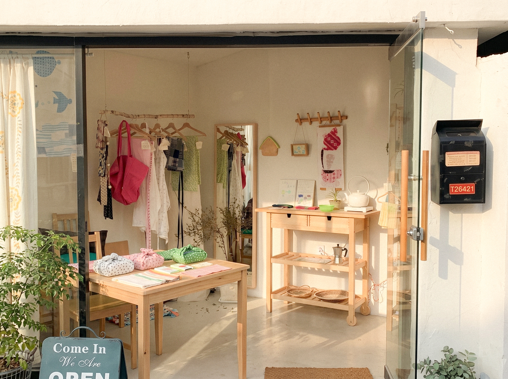
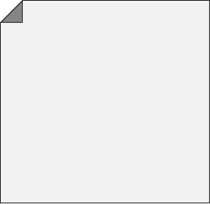
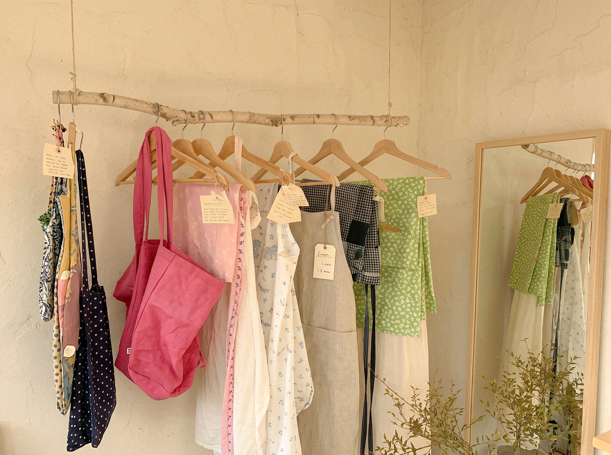
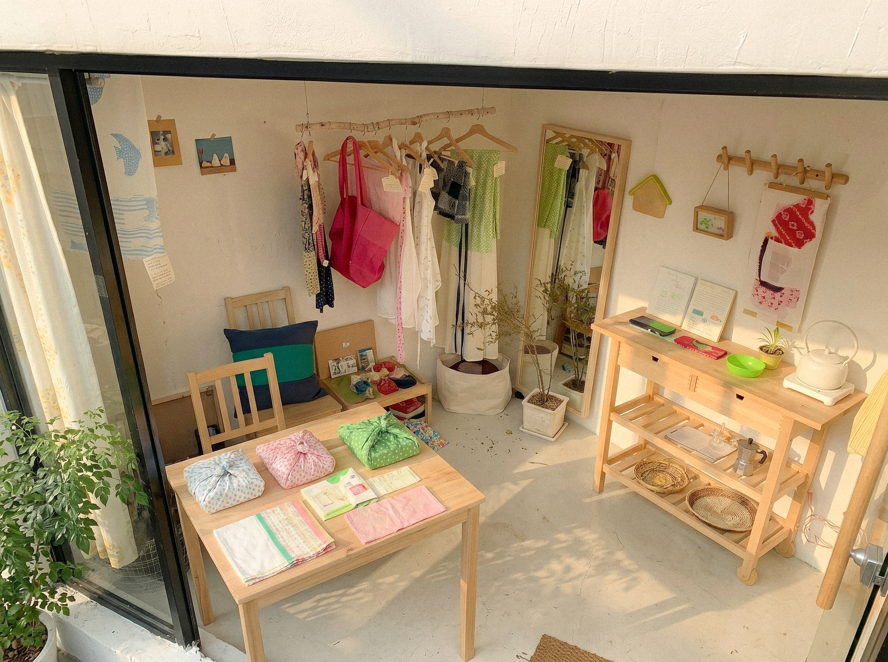
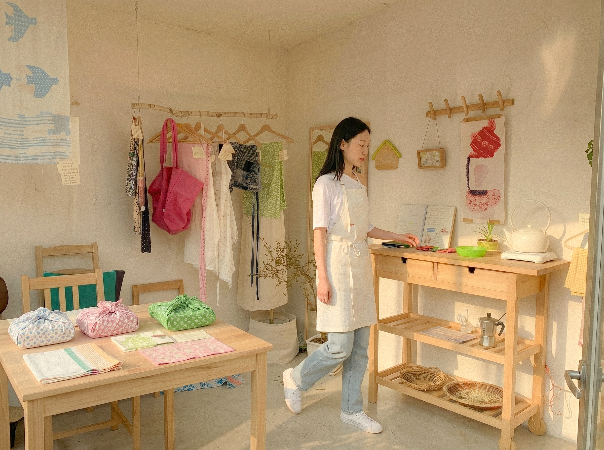
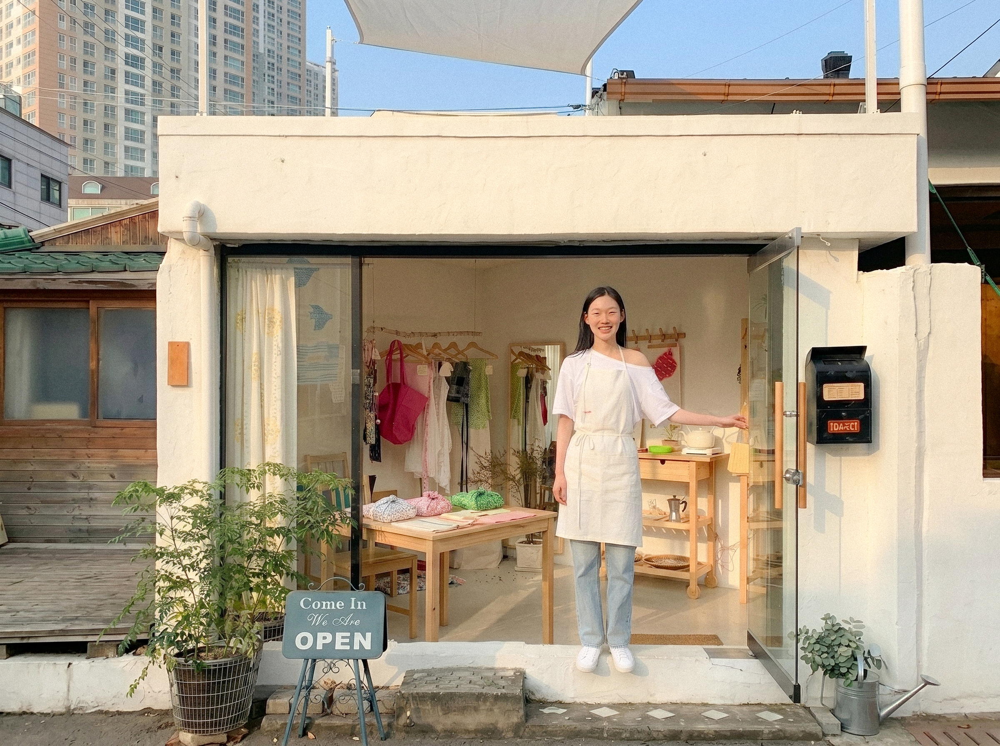
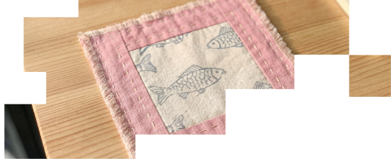

옷장 속에 오래된 셔츠 한 장을 발견했을 때, 그 옷을 입었던 계절과 순간이 함께 떠오르는 경우가 있다. 부산 전포동의 로컬 브랜드 NUVO는 그런 기억을 담아낼 수 있는 옷을 만들고자 한다. 유행보다 오래 남는 감정에 집중하는 정하람 대표를 만나 브랜드 이야기를 들어보았다.



-
Q.
인터뷰 제목처럼 '시간이 지나도 그 계절이 떠오르는 옷'이라는 표현이 인상적입니다.
어떤 의미를 담고 있는지 설명해 주실 수 있을까요?옷을 좋아하게 된 이유도 비슷한 경험 때문이었다. 오래된 옷을 꺼내 입었는데 그 옷을 입고 여행을 갔던 날이나 친구들과 보냈던 시간이 자연스럽게 떠오르더라. 옷은 단순한 패션 아이템이 아니라 시간을 담는 기록이라고 생각한다. NUVO도 그런 역할을 하는 옷을 만들고 싶었다.
-
Q.
그래서 유행보다는 오래 입을 수 있는 디자인을 추구하는 건가요?
옷을 좋아하게 된 이유도 비슷한 경험 때문이었다. 오래된 옷을 꺼내 입었는데 그 옷을 입고 여행을 갔던 날이나 친구들과 보냈던 시간이 자연스럽게 떠오르더라. 옷은 단순한 패션 아이템이 아니라 시간을 담는 기록이라고 생각한다. NUVO도 그런 역할을 하는 옷을 만들고 싶었다.


인터뷰 제목처럼 '시간이 지나도 그 계절이 떠오르는 옷'이라는 표현이 인상적입니다.
어떤 의미를 담고 있는지 설명해 주실 수 있을까요?
옷을 좋아하게 된 이유도 비슷한 경험 때문이었다. 오래된 옷을 꺼내 입었는데 그 옷을 입고 여행을 갔던 날이나 친구들과 보냈던 시간이 자연스럽게 떠오르더라. 옷은 단순한 패션 아이템이 아니라 시간을 담는 기록이라고 생각한다. NUVO도 그런 역할을 하는 옷을 만들고 싶었다.
-
Q.
고객들에게 어떤 브랜드로 기억되고 싶나요?
'오래 입는 브랜드'로 기억되고 싶다. 유행이 지나 버려지는 옷이 아니라 시간이 지나도 다시 찾게 되는 옷, 그리고 그 옷을 볼 때 좋은 기억이 함께 떠오르는 브랜드가 되었으면 한다.


-
Q.
앞으로 NUVO가 전하고 싶은 이야기는 무엇인가요?
옷은 결국 사람의 일상과 함께한다고 생각한다. 특별한 날뿐 아니라 평범한 하루에도 자연스럽게 스며드는 옷을 만들고 싶다. 몇 년 뒤 사진을 보다가 "이 옷 그때 입었던 옷인데"라고 말할 수 있는 그런 순간을 만들어주는 브랜드가 되고 싶다.
-
정하람 대표는 인터뷰를 마치며 "좋은 옷은 단순히 오래 입는 옷이 아니라 오래 기억되는 옷이라고 생각한다"고 말했다. NUVO는 오늘도 계절의 분위기와 시간을 담아낼 수 있는 옷을 만들고 있다.
Thank You Event
이야기를 끝까지 읽어주신 여러분을 매장에서 만나고 싶습니다. 인터뷰 페이지를 보여주시면 매장의 무드를 담은 한정 컵받침을 선물로 드립니다.
사음품 | NOVO 컵받침 1종 증정
기간 | 2026.06.01 ~ 2026.06.30
*수량 소진 시 조기 종료
